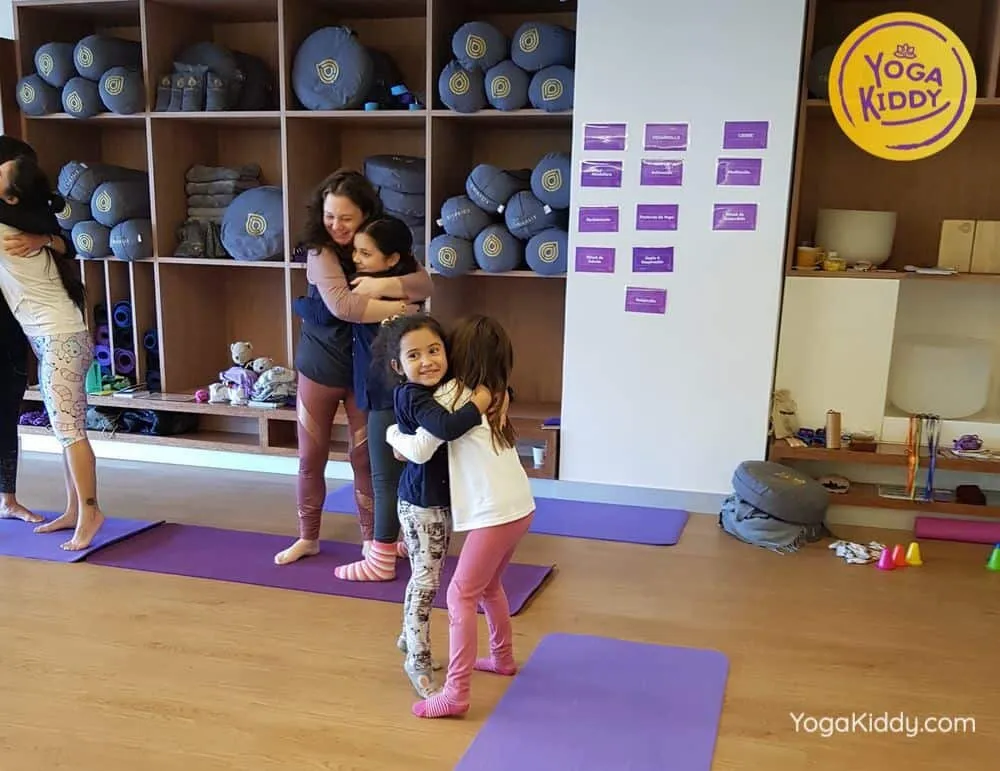

Necesitamos caricias para un mundo más amable, porque “cuando acariciamos, no sólo tocamos la piel, tocamos el corazón”. (Rolando Toro)
Nuestra capacidad de acariciar, se dice que deriva de nuestros
antepasados genéticos, los primates quienes la descubrieron al comenzar a caminar en dos pies.
La piel es el órgano más extenso, considerado como la madre de los sentidos. Es el primer y más grande órgano receptor. Las caricias llegan a esta puerta de entrada para el aprendizaje de la ternura y de la paz. Cuando llegan a ella, luego se van directo al cerebro, donde permiten explosiones de dopamina y oxitocina, las cuales al ser secretadas promueven la relajación del cuerpo y sentimientos de bienestar social y emocional.
Las caricias son una demostración emocional, son un acto desencadenado desde la ternura, son un mecanismo de comunicación emocional. Y por ello es importante llamarlas para que se hagan presente en nuestras clases de yoga infantil, valorando el poder transformador del gesto como lo es la caricia. Debemos promoverlas sin miedo, ya que ellas nos permitirán profundizar en el vínculo que establecemos con nuestros niños y niñas, creando un puente lleno de magia y amor en el acto de dar y recibir.
Es importante considerar que para nuestros primeros encuentros, es recomendable regalar dichas caricias utilizando elementos para ir aproximándonos poco a poco a sus cuerpos, manteniendo el respeto al proceso de confianza que ellos y ellas necesitan.
¿cómo hacerlo?
- Mediante el uso de telas para acariciar sus cuerpos, las cuales tienen que ser suaves para brindar una experiencia sensitiva agradable.
- Con plumas, las cuales puedes ocupar para acariciarlos tú o que se acaricien entre ellos/ellas.
- Las pelotas resultan también ser un muy buen recurso como puente para tener contacto con aquella piel de la cual hablamos.
- Por medio de globos o bombitas de aguas.
- Con masajeadores como rodillos, rascadores, usleros, etc.
Además puedes:
- En los momentos de la relajación, frotar tus dedos índices y medios en sus sienes con algún aceite aromático que permita favorecer ese momento de calma y silencio.
- Lo mismo puedes hacerlo en la zona del entrecejo.
- Utilizando alguna crema con olor agradable, puedes pedirle que acaricien sus pies para el reconocimiento y valoración de ellos.
Junto con esto, es de vital importancia que durante todas tus prácticas junto a ellos/as, mantengas en consideración los siguientes aspectos:
- Cuando los y las recibas, procura saludar mientras ellos/as lo permitan con un abrazo, beso o de la mano, pero mantener algún contacto físico, siempre cuando el niño o niña quiera acceder a esto, nunca pero nunca obligar a hacerlo.
- Procurar planificar actividades donde en determinados momentos haya contacto físico entre los y las participantes.
- Darle al cuerpo el espacio de importancia que ha perdido.
Confía en el poder infinito de las caricias…
Peggysue.S.S